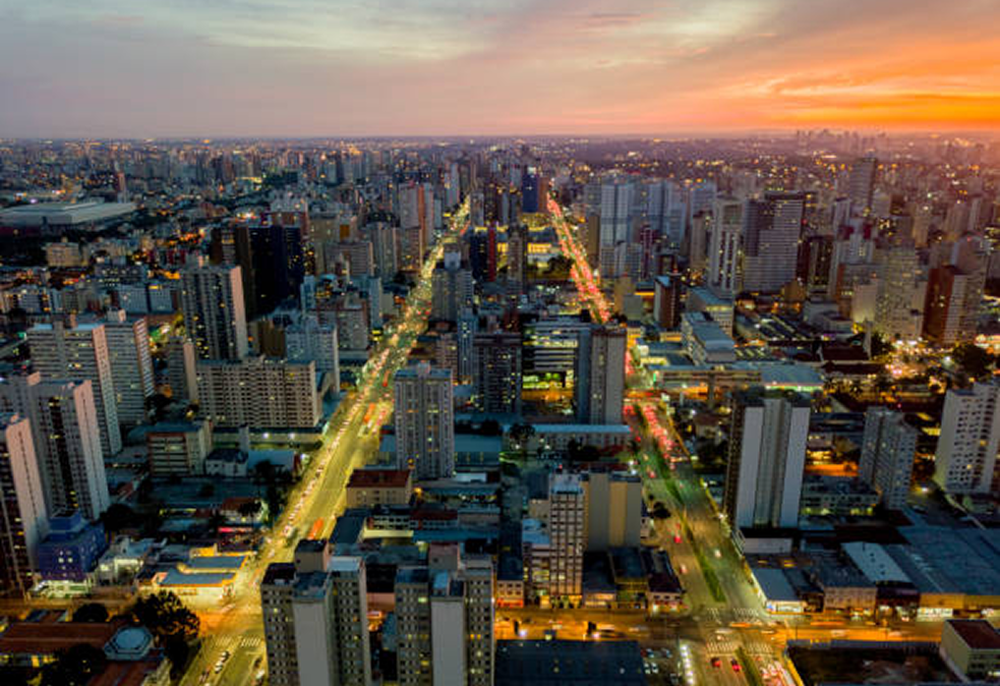

INFORMAÇÕES
Curitiba é um município brasileiro, capital do estado do Paraná, localizado a 934 metros de altitude no Primeiro Planalto Paranaense, a mais de 110 quilômetros do Oceano Atlântico, distante 1 386 km a sul de Brasília, capital federal. Com 1 773 718 habitantes,é o município mais populoso do Paraná e da região Sul, além de ser o 8.º do país, segundo Censo Demográfico realizado pelo IBGE para 2022.
